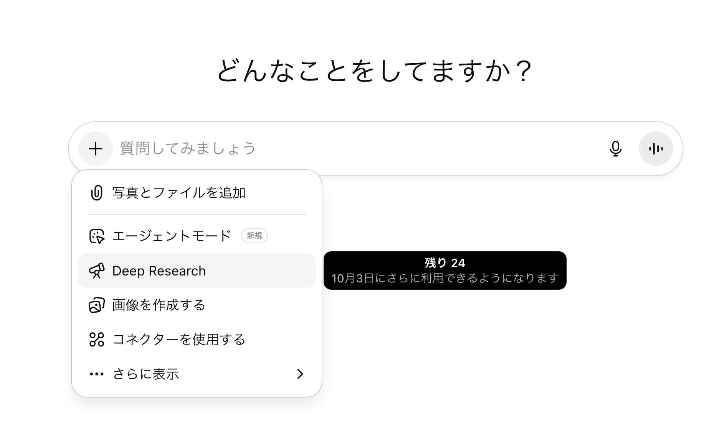
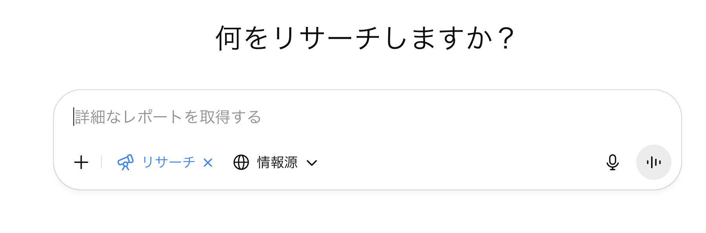
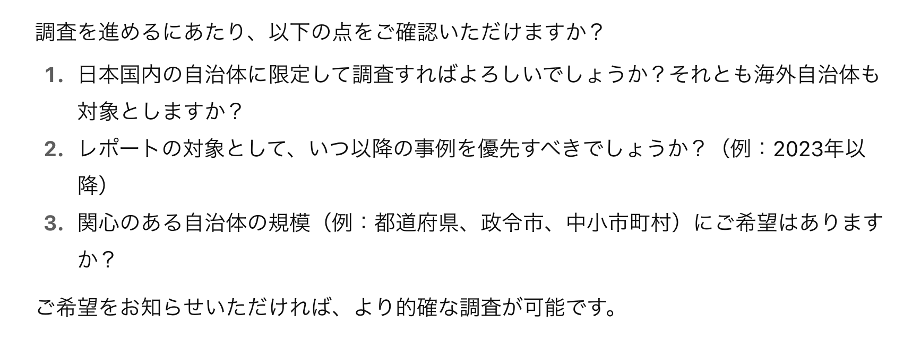

生成AIワークショップ
3つのデモンストレーションで学ぶ実践的AI活用
2025年9月29日
本日の生成AIデモンストレーション概要
📝
LP・チラシ作成
生成AIを活用したバイブコーディング
🔍
DeepResearch
他の自治体の生成AI活用事例調査
💬
定常業務のワークフロー化
difyを使った返信文案の作成例
デモ1: ClaudeでLP・チラシ作成
🎯 目的
バイブコーディングによる高速Web制作
このデモで学べること
- プロンプトからHTMLコードの自動生成
- リアルタイムでの修正・改善
- デザインの即座の反映
- 制作時間の大幅短縮
従来のLP制作 vs Claude活用
従来の方法（約2-3日）
- 🎨 デザイン案作成
4時間 - 💻 HTML/CSSコーディング
8時間 - 📝 コンテンツ作成・調整
4時間 - 🔧 修正・調整
4時間 - 👥 外注の場合
10-30万円
Claude活用（約30分）
- 💭 要件をプロンプトで指定
5分 - 🤖 Claudeがコード生成
1分 - ✏️ 対話形式で修正
20分 - ✅ 完成・公開
4分 - 💰 コスト
Claude利用料のみ
効果的なプロンプトの書き方
初期プロンプト例
都留市の観光PRページを作成してください。
以下の要素を含めてください：
- ヘッダー：市のロゴとナビゲーション
- ヒーローセクション：富士山の見える街並み
- 観光スポット紹介（3-4箇所）
- アクセス情報
- お問い合わせフォーム
- レスポンシブ対応
- モダンで親しみやすいデザインポイント
- ✅ 具体的な要素を明確に指定
- ✅ デザインの方向性を伝える
- ✅ 技術要件（レスポンシブ等）を含める
バイブコーディング実演の流れ
1基本構造の生成（2分）
- Claudeに初期プロンプトを投げる
- 基本的なHTML構造が即座に生成
2デザイン調整（5分）
- 「配色を市のブランドカラーに変更」
- 「フォントサイズを大きく」
- リアルタイムで変更を確認
3コンテンツ追加（5分）
- 実際の観光情報を追加
- 画像の配置調整
- テキストの修正
4機能追加（3分）
- アニメーション効果
- お問い合わせフォーム
- SNSリンク追加
実際に生成されたコード
✨
完全なHTML/CSS/JS
プロ品質のコード生成
📱
レスポンシブ対応
全デバイスで最適表示
🎨
モダンデザイン
最新のデザイントレンド
♿
アクセシビリティ
誰でも使いやすい設計
🚀 生成されたコードは即座にブラウザで確認可能
対話的な修正プロセス
修正依頼の例
👤 ユーザー：
「ヘッダーの背景を半透明にして、スクロール時に固定してください」
🤖 Claude：
承知しました。以下の変更を加えます：
- ヘッダーに position: fixed を追加
- 背景に rgba() で半透明効果
- スクロール時の影を追加
メリット
- 専門知識不要で細かい調整が可能
- 試行錯誤が容易
- 即座に結果を確認
バイブコーディングの効果
🎯 実現できること
制作時間
2-3日 → 30分
約95%削減
コスト
10-30万円 → ほぼ0円
99%以上削減
必要スキル
HTML/CSS/JS → 日本語
専門知識不要
修正対応
数時間 → 数分
即座に対応
📊 適用可能な業務
- イベント告知ページ
- 観光PRサイト
- 市民向けお知らせ
- アンケートフォーム
- 施設予約ページ
デモ2: DeepResearchで情報検索
🎯 目的
他の自治体の生成AI活用事例を調査してレポートにまとめる
このデモで学べること
- 高度な情報収集・分析作業の効率化
- 複数情報源からの自動情報収集
- 構造化されたレポートの自動生成
- 調査時間の劇的な短縮効果
従来の調査方法の課題
合計約5時間30分の作業時間
🔍
Google検索
30分
「自治体 生成AI 活用事例」で検索
📄
サイト内容確認
1時間
各自治体のサイトを個別訪問
📊
報告書調査
1時間
総務省・デジタル庁の資料
📝
Excel整理
2時間
情報を手動で転記・分類
📋
レポート作成
1時間
Wordで文書作成
↓
DeepResearch使用で約1時間に短縮！
💭
プロンプト検討
5分
調査内容の明確化
🤖
DeepResearch
10分
自動調査・生成
✏️
レポート確認・修正
45分
内容確認と仕上げ
約82%の時間削減を実現
初期プロンプトから改善へ
初期プロンプト
優秀なリサーチャーとして、Deepresearchを使って以下のレポートをまとめたいです。
他の自治体の生成AI導入・活用事例
このプロンプトをもっとよくしてください。↓
ChatGPTがより詳細で構造化されたプロンプトを提案
改善されたプロンプト
あなたは優秀なリサーチャーです。
以下のテーマについて、Deepresearchを用いて体系的に調査・分析を行い、レポートをまとめてください。
### テーマ
他の自治体における生成AI導入・活用事例
### 調査・分析観点
- 導入の背景・目的（課題認識、政策文脈）
- 活用分野（例：文書作成、窓口対応、議事録要約、教育、観光PRなど）
- 活用事例の具体例（どのような業務・サービスでAIが使われているか）
- 成果や効果（定量的指標・定性的効果の両方）
- 課題・リスク（予算、職員スキル、住民への影響、セキュリティ、ガイドラインなど）
- 今後の展望や発展可能性DeepResearchの使い方
STEP 1: チャットを開始

STEP 2: DeepResearchを選択

STEP 3: 調査の方向性を回答

- 日本国内の自治体に限定
- 2023年以降の事例
- 関心のある自治体の指定
DeepResearch実行中
実行時間
8分
情報源
15件
検索回数
33件

デモ4: 定常業務のワークフロー化
🎯 目的
Difyを使った返信文案の自動作成
このデモで学べること
- 定型業務の効率化
- AIワークフローの構築方法
- 品質の安定した文書生成
- 業務の標準化と時間短縮
本日のまとめ
生成AIで実現できる業務改革
4つのデモンストレーションを通じて、生成AIの実践的な活用方法を体験いただきました
💻 LP・チラシ作成
バイブコーディングで制作時間95%削減
🔍 DeepResearch
調査時間を5時間半→1時間に短縮
📝 ガイドライン作成
AI活用で政策文書を高速作成
💬 ワークフロー化
Difyで定常業務を自動化